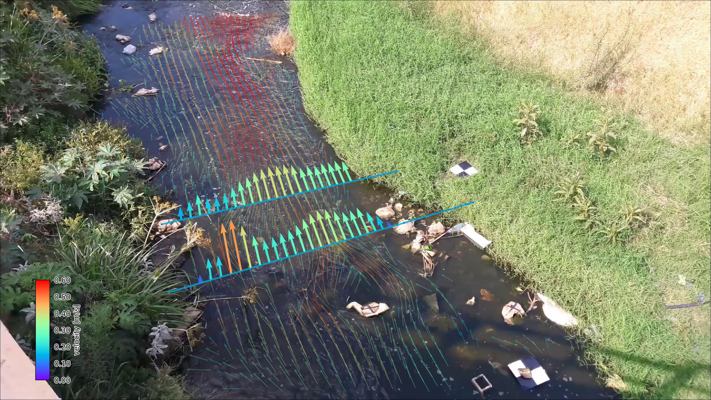

Welcome to pyOpenRiverCam’s documentation!#
pyorc, short for “pyOpenRiverCam” is a fully Open Source library for performing image-based river flow analysis. It is the underlying library for computations on the fully open software stack OpenRiverCam. pyorc can only be successful if the underlying methods are made available openly for all. Currently pyorc implements Large-scale Particle Image Velocimetry (LSPIV) based flow analysis using the OpenPIV library and reprojections and image pre-processing with OpenCV. We wish to extend this to Large-scale Particle Tracking Velocimetry (LSPTV) and Space-Time Image Velocimetry (STIV) for conditions that are less favourable for LSPIV using open libraries or extensions to this code.
Image: Example of pyorc velocimetry over Ngwerere river at the Zambezi Road crossing - Lusaka, Zambia.
For whom?#
pyorc offers a “Application Programming Interface” in the well-known computer language python, and performs the full processing chain from your field work collected videos and control points to fully processed, and visualized results. Example users are:
Water managers, geospatial service providers, drone operators, hydrometrists, environmental resources managers, and so on who wish to process their video data in a simple to use python platform and workflow/
Programmers who wish to establish their own applications, graphical interfaces, dashboards or other applications on top of the API.
Researchers wishing to have a fully integrated and open-source tool chain to kick start their research in optical hydraulic flow observations, having the liberty to publish their entire research, including the processing methods.
Developers who wish to further develop methods along with the core development team of pyorc.
Capabilities#
Current capabilities are:
Reading of frames and reprojection to surface
Velocimetry estimation at user-defined resolution
Discharge estimation over provided cross-section
Plotting of velocimetry results and cross-section flows in camera, geographical and orthoprojected perspectives.
We use the well-known xarray data models and computation pipelines (with dask) throughout the entire library to guarantee an easy interoperability with other tools and methods, and allow for lazy computing.
Support us#
We are seeking funding for the following frequently requested functionalities:
A command-line interface for processing single or batch videos
Implementation of better filtering in pre-processing
Improved efficiency of processing (e.g. through GPU/TPU acceleration)
Establishing on-site edge computation through a raspberry-pi camera setup
Implementation of additional processing algorithms (STIV and LSPTV)
Establishment of dashboard environments for several use cases
Please contact us at info@rainbowsensing.com for further information.
Note
pyorc has been created by Rainbow Sensing to support local people, with local devices and software to monitor their environment. If you like pyorc, require additional functionalities or want to contact us for other work or ideas, please email us on info@rainbowsensing.com
Note
Acknowledgement: the development of pyorc has been funded partly by the World Meteorological Organisation, Rijkswaterstaat and in-kind contributions of Rainbow Sensing.